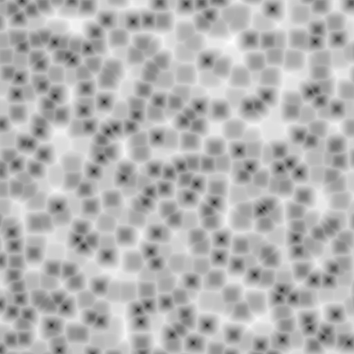

沃罗诺伊纹理着色器节点¶

沃罗诺伊纹理着色器节点。
沃罗诺伊纹理 节点用于添加了一个产生沃罗诺伊模式的程序纹理。沃罗诺伊模式是通过随机分布种子点生成的，这些点向外扩展则称为细胞格，边界由到其他点的距离确定。请参阅Wikipedia中的 沃罗诺伊图 条目以了解更多信息。
沃罗诺伊纹理 节点可用于生成逼真的金属 “锤击” 效果，以及生命体着色，如皮肤中的鳞片或静脉。
输入选项¶
- 矢量
- 纹理坐标到样本纹理；如果接口未连接，则默认生成纹理坐标。
- 缩放
- 整体纹理缩放；比例越大，产生的点越多，从而产生更多的细胞格。
属性¶
- 着色
沃罗诺伊细胞格纹理的着色方式。
- 强度
- 每个细胞格从其中心至其外边缘，使用黑色到白色的渐变来着色。
- 细胞格
- 每个细胞格随机分配一个纯色，强制相邻单元格具有不同的颜色。
- 间距度量
细胞格之间纹理的计算方式。
- 距离
- 使用欧几里德距离公式(恰好是毕达哥拉斯公式)计算点之间的距离。请参阅Wikipedia中的 欧几里德距离 条目以了解更多信息。
- 曼哈顿点距
- 根据网格计算点之间的距离，不允许垂直线。这是通过计算两点坐标的绝对差之和来实现的。请参阅Wikipedia中的 曼哈顿距离 条目以了解更多信息。
- 切比雪夫
- 通过确定沿任何坐标维度的最大差异来计算两点之间的距离。请参阅Wikipedia中的 切比雪夫距离 条目以了解更多信息。
- 闵可夫斯基
通过配置 指数 输入可以表示所有其他距离度量的通用算法。该指数表示闵可夫斯基距离函数中的 p，见下式：
\((\sum_{i=1}^{n}{|X_{i} - Y_{i}|^{p}})^{1/p}\)
指数越高，细胞格越方。小于1.0的 指数 会产生星形，而1.0的值与使用 曼哈顿 距离相同。值为2.0时，可给出与 距离 度量相同的结果。最后，指数10.0与 切比雪夫 距离度量相同。因此，所有距离指标基本相同 -- 其实都是 闵可夫斯基 的特殊值。

闵可夫斯基指数为0.5(闵可夫斯基 1/2)。

闵可夫斯基指数为1.0(曼哈顿点距)。

闵可夫斯基指数为2.0(距离)。
闵可夫斯基指数为4.0。

闵可夫斯基指数为10.0(切比雪夫)。
- 功能输出
确定用于计算距离的点。最近点，第2点，第3点和第4点分别使用最近点，第2点，第3点和第4点的值，以此类推。
裂纹 使用最近和第2近点之间的差异来生成沃罗诺伊细胞格周围的线。使用 强度 和 着色 时，此选项效果最佳。
{kind=link}
输出选项¶
- 颜色
- 输出颜色纹理。
- 系数
- 颜色 输出的灰度表示。
举例¶

沃罗诺伊纹理，强度着色效果。 |
{kind=link}